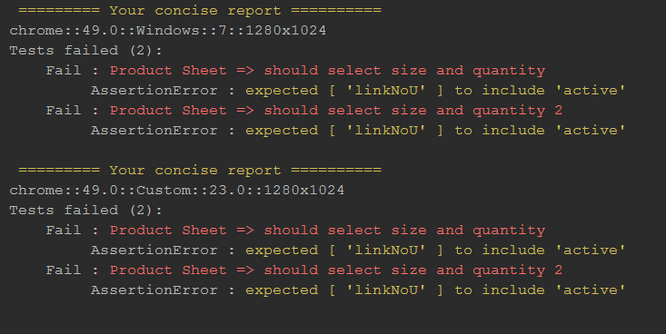
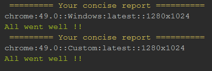

WDIO Concise Reporter
A concise reporter for WebdriverIO
This project is derived from WDIO-Json-Reporter
 
Installation
npm install wdio-concise-reporter --save-devInstructions on how to install WebdriverIO can be found
here.
Configuration
All is in the title there in no configuration, we try to keep it as concise as possible